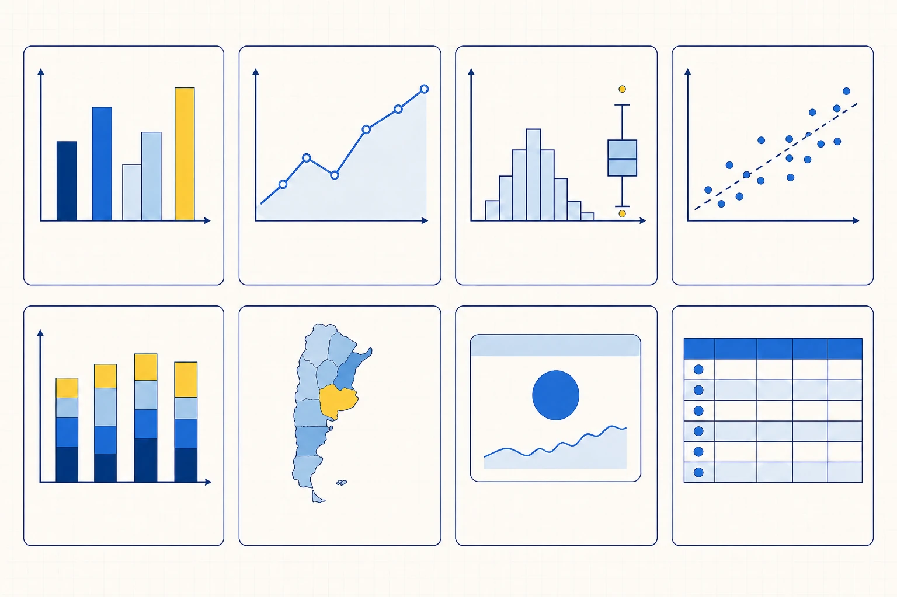
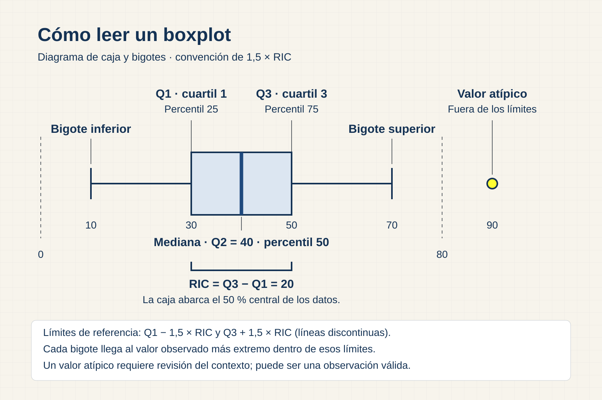

Describir lo observado antes de buscar explicaciones
La estadística descriptiva organiza lo que aparece en un conjunto de datos. Resume cantidades, posiciones, dispersión y relaciones dentro de una población definida. Una media o un porcentaje adquieren sentido cuando se conoce el período, la unidad de análisis, la cantidad de observaciones y los filtros aplicados.
Un resumen descriptivo no demuestra por sí mismo qué ocurrirá fuera del período ni qué causa produjo un patrón. Si Faro Sur observa más demoras en una región, el dato orienta una investigación. La composición de pedidos, la distancia, el transportista o la disponibilidad pueden intervenir. La descripción debe conservar esa frontera.
Antes de interpretar una medida conviene declarar población, unidad, tamaño, segmentación, faltantes y distribución. Esa información permite saber qué representa el número y qué observaciones quedaron fuera.
Conteos, proporciones y tasas
El conteo responde cuántos casos cumplen una condición. Decir que hubo 42 pedidos tardíos describe un volumen, aunque no informa si el total de pedidos fue 50 o 5.000. La proporción relaciona esos casos con una población y la tasa agrega una definición operativa del denominador.
Para calcular tardanza, el denominador podría incluir pedidos entregados con fecha prometida válida. Los pedidos cancelados o todavía abiertos requieren una regla. Dos equipos pueden obtener porcentajes distintos a partir del mismo archivo si definen de otra manera la elegibilidad.
Una comunicación clara muestra numerador y denominador. “42 de 310 pedidos elegibles llegaron tarde” permite revisar el cálculo y evita que un porcentaje oculte el tamaño real de la población.
Medidas de tendencia central
La media suma los valores y divide por la cantidad de observaciones. Resulta útil para importes o cantidades aditivas, pero puede desplazarse cuando existen extremos. Si la mayoría de las entregas demora entre dos y cinco días y una tarda 120, la media incorporará ese caso de manera visible.
La mediana ordena los valores y toma la posición central. Responde por el caso que queda en el medio y resiste mejor el efecto de unos pocos extremos. La moda identifica el valor o categoría que aparece con mayor frecuencia y puede haber más de una.
La pregunta decide qué medida conviene. Para estimar carga total, la media puede relacionarse con suma y cantidad. Para describir la experiencia habitual ante una distribución asimétrica, la mediana suele ofrecer una lectura más representativa. Mostrar ambas ayuda a reconocer el sesgo.
Percentiles y niveles de servicio
Un percentil ubica una observación dentro de la distribución ordenada. Si el percentil 90 de demora es siete días, el 90 % de las observaciones tiene una demora igual o menor, según la convención de cálculo utilizada. El 10 % restante forma la cola superior.
Los percentiles permiten describir niveles de servicio que una media puede esconder. Dos transportistas podrían compartir la misma mediana y diferir en su percentil 90; uno presenta casos extremos mucho más demorados. La elección del percentil debe relacionarse con el riesgo y explicarse junto con la población.
Un percentil expresa posición, mientras que un porcentaje expresa una parte de un total. La similitud de los nombres no vuelve intercambiables ambos conceptos.
Medir la dispersión
El rango resta el mínimo al máximo y muestra la amplitud completa. Es fácil de leer, pero depende de dos valores y cambia mucho ante un extremo. El rango intercuartílico, o IQR, resta el primer cuartil al tercero y describe la mitad central de la distribución.
Cómo seleccionar una visualización según la pregunta
Pregunta de lectura¿Qué relación queremos mostrar y qué condiciones debe cumplir el dato?

Comparar
¿Cuántas categorías? ¿El nombre es largo?
Evolucionar
¿El tiempo es continuo y ordenado?
Distribuir
¿Hay muchas observaciones de una variable?
Relacionar
¿Son dos variables numéricas?
Componer
¿Las partes comparten un total significativo?
Ubicar
¿Existe una geometría o coordenada válida?
Comunicar un KPI
¿Una cifra y su referencia responden la decisión?
Consultar detalle
¿La persona necesita buscar casos concretos?
La elección comienza con la pregunta. El tipo de variable, la cantidad de categorías, la continuidad temporal y el número de observaciones permiten descartar gráficos que ocultarían la comparación.
Base visual generada con ChatGPT · OpenAI Images.La varianza calcula la dispersión mediante distancias cuadradas respecto de la media. Sus unidades quedan elevadas al cuadrado, por lo que suele interpretarse mediante el desvío estándar, que vuelve a la unidad original. Ambas medidas son sensibles a extremos y conviene acompañarlas con una visualización.
Centro y dispersión deben leerse juntos. Dos regiones pueden tener la misma demora media y niveles de variabilidad muy diferentes. La región menos estable presenta un riesgo operacional que el promedio aislado no muestra.
Cómo leer un boxplot
Un boxplot representa el primer cuartil, la mediana y el tercer cuartil dentro de una caja. Los bigotes se extienden según una convención, habitualmente relacionada con 1,5 veces el IQR, y los puntos que quedan fuera se muestran de forma separada.

La figura comprime mucha información y facilita comparar grupos. Una caja más alta indica mayor dispersión central; una mediana desplazada sugiere asimetría; los puntos aislados señalan observaciones que conviene revisar. El gráfico no explica por qué existe esa forma.
Un punto fuera de los bigotes conserva su condición de observación hasta que la fuente y el contexto indiquen otra cosa. Puede revelar una captura incorrecta, un evento raro o una unidad diferente. El tratamiento debe documentarse y evaluar cómo cambia el resumen.
Reconocer fuentes de sesgo
El sesgo puede surgir en la selección de casos, la cobertura temporal, la medición, los faltantes o la propia definición. También aparece cuando solo sobreviven en la base los eventos exitosos o cuando un cambio de sistema altera la forma de registrar.
El archivo de pedidos de Faro Sur representa operaciones registradas. No contiene necesariamente la demanda que la empresa no pudo atender, las consultas abandonadas o las ventas realizadas fuera del sistema. Una conclusión sobre “preferencias de los clientes” excedería esa cobertura.
Para evaluar un patrón preguntamos quién o qué puede faltar, cómo se generó el registro y si el proceso cambió durante el período. Declarar esas condiciones permite utilizar el análisis sin otorgarle un alcance que la fuente no sostiene.
Asociación y correlación
Un diagrama de dispersión ubica dos variables numéricas y permite observar dirección, forma, intensidad, grupos y valores extremos. Antes de calcular una correlación conviene mirar esa forma. Una relación curva o varios segmentos pueden quedar ocultos por un único coeficiente.
La correlación de Pearson resume la relación lineal. Un valor cercano a cero puede coexistir con una relación no lineal, y un extremo puede desplazar el coeficiente. Además, mezclar grupos con comportamientos distintos puede producir una asociación que desaparece al segmentar.
Los umbrales de “fuerte” o “débil” dependen del dominio y del propósito. En operaciones, una asociación moderada puede justificar una alerta si el impacto es alto; en otro contexto puede resultar insuficiente para actuar. El coeficiente debe acompañarse con visual, tamaño de población y alcance.
Qué hace falta para hablar de causalidad
Afirmar que una variable causa otra requiere un diseño que descarte explicaciones alternativas. Una asociación entre distancia y demora puede estar confundida por transportista, tipo de producto, nivel de inventario o prioridad de pedido. También puede existir causalidad inversa, selección o una tendencia temporal compartida.
En esta materia utilizamos lenguaje acorde con la evidencia: “se asocia con”, “coincide con” o “merece investigar”. Una hipótesis causal puede formularse, pero debe distinguirse del resultado observado y señalar qué experimento, comparación o dato adicional permitiría evaluarla.
Esta prudencia mejora la decisión. La organización puede investigar un segmento sin presentar como certeza una explicación que todavía admite alternativas.
Comunicar incertidumbre sin paralizar la decisión
La incertidumbre aparece por medición imperfecta, variabilidad, cobertura incompleta, supuestos y cambios futuros. Aunque la unidad no desarrolla inferencia formal, el análisis debe mostrar qué aspectos podrían modificar la conclusión.
Anatomía de una visualización verificable
Pregunta de lectura¿Qué información necesita una persona para interpretar y comprobar el gráfico?
VERSIÓN PROBLEMÁTICA
Escala recortada
El eje comienza en 17 % y amplifica una diferencia pequeña.
Contexto ausente
Sin período, unidad, denominador ni cobertura.
Color sin respaldo
La leyenda depende solo de tonos parecidos.
VERSIÓN CORREGIDA
Comparación honesta
Barras desde cero; margen % rotulado en cada región.
Alcance declarado
Agosto 2026 · pedidos completados · n = 3.574
Evidencia visible
Fuente, actualización, intervalo y etiquetas directas.
La versión corregida declara qué mide, sobre qué población y con qué escala. La fuente, la fecha de actualización y la incertidumbre permiten comprobar el alcance del hallazgo.
- 01
La versión problemática recorta el eje, omite período y mezcla colores sin una función explicada.
- 02
La versión corregida parte de cero en barras y declara porcentaje, período y población.
- 03
El denominador, la cobertura y la incertidumbre evitan presentar la cifra como universal.
- 04
Etiquetas directas y contraste accesible reducen la dependencia de una leyenda por color.
Podemos comunicarla mediante rangos, percentiles, escenarios y análisis de sensibilidad. Comparar una métrica con y sin casos extremos revela cuánto depende de ellos. Mostrar cobertura y faltantes permite juzgar la representatividad. Un escenario de costos alternativo indica cuándo una recomendación deja de ser conveniente.
El límite se redacta junto con su consecuencia. “La región falta en el 8 % de los clientes” gana utilidad si se agrega qué segmentos quedan subrepresentados y qué decisión necesita confirmación.
Elegir el visual según la tarea
La forma del gráfico depende de lo que la audiencia necesita comparar. Las barras muestran diferencias entre categorías; una línea conserva el orden temporal; el histograma y el boxplot describen distribuciones; la dispersión explora relaciones; una tabla ofrece detalle.
| Tarea | Visual de partida | Pregunta de revisión |
|---|---|---|
| comparar categorías | barras | ¿la escala permite comparar longitudes? |
| seguir una tendencia | línea | ¿los intervalos temporales son consistentes? |
| observar una distribución | histograma o boxplot | ¿se ven centro, dispersión y extremos? |
| relacionar dos variables | dispersión | ¿hay grupos o formas no lineales? |
| mostrar composición | barras apiladas | ¿pueden compararse las partes relevantes? |
| comunicar un KPI | número con referencia | ¿se conoce meta, período y denominador? |
| consultar detalle | tabla | ¿las columnas necesarias pueden leerse? |
La herramienta ofrece muchas variantes, pero la tarea reduce el conjunto de opciones. Un gráfico adicional debe aportar una comparación nueva o una evidencia necesaria.
Diseñar para que el dato pueda verificarse
Las escalas deben ser coherentes con la codificación visual. Cuando la longitud de una barra representa magnitud, comenzar lejos de cero puede exagerar diferencias. El color necesita una función: separar grupos, señalar estado o dirigir la atención. Agregar colores sin significado aumenta el esfuerzo de lectura.
El título puede expresar la observación principal y el subtítulo completar población o período. Las unidades, fuente y actualización se ubican cerca del gráfico. Etiquetas y contraste deben permitir leer la figura sin depender solo del color.
La accesibilidad forma parte de la interpretación. Un estudiante que amplía la página o una persona con dificultad para distinguir colores debe conservar la relación entre categorías, valores y mensaje.
Cómo detectar un gráfico engañoso
Un eje truncado, un doble eje sin justificación o un área desproporcionada pueden magnificar una diferencia. Omitir categorías, mezclar intervalos temporales o comparar un acumulado con un período completo modifica la población sin hacerlo visible.
Un promedio sin distribución puede esconder extremos y un denominador ausente puede hacer que una tasa parezca mayor. Los colores también comunican juicio: marcar una categoría en rojo sugiere alerta aunque la regla no lo haya establecido.
La revisión intenta reconstruir los datos detrás del gráfico. Si la audiencia no puede reconocer población, escala y definición, la visual necesita contexto adicional o una forma más simple.
Ordenar la explicación mediante un storyboard
Un storyboard organiza la comunicación antes de elegir el formato final. Comienza con la decisión, presenta la tensión que merece atención, muestra evidencia controlada, propone una acción y declara el límite o siguiente paso.
Los títulos de esas escenas deberían permitir reconstruir el argumento sin ver aún los gráficos. “Patagonia concentra la demora más alta” aporta una observación; el gráfico posterior permite verificarla y conocer magnitud, período y dispersión.
Preparar el storyboard también ayuda a quitar resultados interesantes que no cambian la decisión. El detalle puede quedar disponible como respaldo sin interrumpir el recorrido principal.
Hipótesis para explorar en Faro Sur
Faro Sur ofrece patrones que deben comprobarse. Patagonia podría presentar una demora mediana mayor, pero esa diferencia puede mezclar distancia y disponibilidad. Los pedidos parciales pueden requerir más tiempo total. Los kits pueden combinar margen alto con riesgo de quiebre, y los clientes de gran volumen pueden recibir descuentos que alteran el margen porcentual.
Cada afirmación comienza como una hipótesis. El notebook define población y medida, la visual muestra la distribución, y la interpretación identifica explicaciones alternativas. El resultado final separa lo observado de lo que todavía necesita investigación.
Preguntas de comprobación
- ¿Qué medida de centro conviene para una demora asimétrica?
- ¿Qué pedidos forman el denominador de OTIF?
- ¿Qué información se revisa antes de excluir un valor extremo?
- ¿Qué variables podrían confundir la relación entre región y demora?
- ¿Qué visual permite comparar dispersión entre transportistas?
- ¿Qué límite debe acompañar el hallazgo principal?
- ¿Cómo cambiaría la conclusión si se excluyeran los casos sin región?
Alcance de la unidad
La unidad desarrolla descripción, distribución, asociación, incertidumbre y selección visual. Regresión, pruebas de hipótesis, intervalos formales y diseño experimental quedan reservados para la asignatura correlativa.